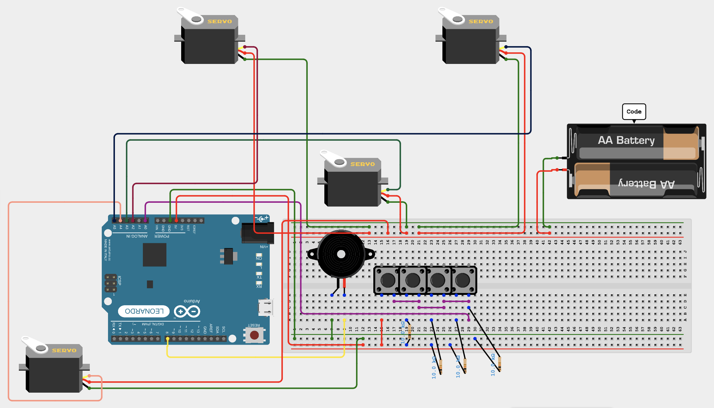
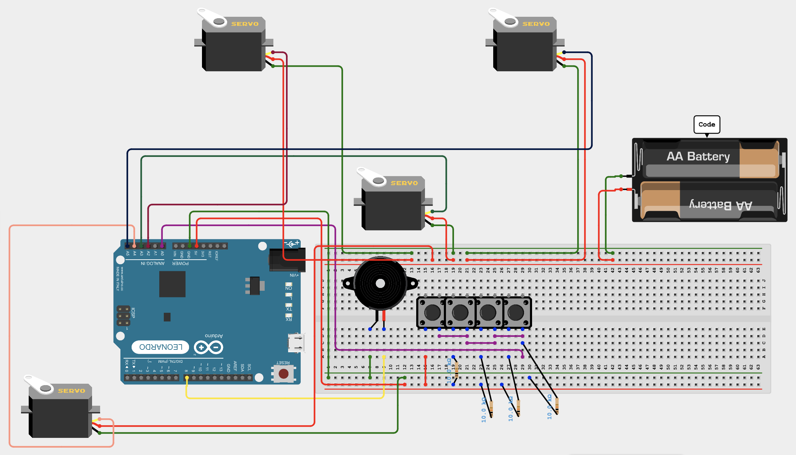

Dancing Machine involves a 3-D printed skeleton figure moving its arms and legs to the cues of musical tones played by a 4-buttoned keyboard. On each button press, a distinct sound is generated and all 4 limbs of the skeleton move in clockwise/anticlockwise motion. I used a resistor ladder and created a schematic to help visualise the circuit. Its program was written in C++.
Generating live music using Tidal Cycles by making and manipulating algorithmic patterns and functions. Done with the Hacksmiths Society from Goldsmiths UOL. Ensemble consists of me, Justin, and Shang.
"The other story of your food" is a two-part project where I had to choose any food item of choice
and research details, such as its brand image, cultural presence, packaging information, ingredients used, etc.
I then formulated a question to
investigate based on the subtext of the collected information. Finally, I made an interactive 3-d
artwork in p5.js to present my question and conclude my findings altogether.
Property Ladder is a platformer game was made by my team partner Jalisa Abeid and I, within 48 hours. Originally, our game's concept was revolved around equity. We built 2 levels where the player collects letters from jargon found in housing contracts, to move up a physical ladder. We tried integrating easily accessible features - making simple controls (spacebar for jump, left and right arrows for moving), identifying actions (such as a jump) with a unique sound effect, and making high contrast icons (better visibility in case of visual impairment).